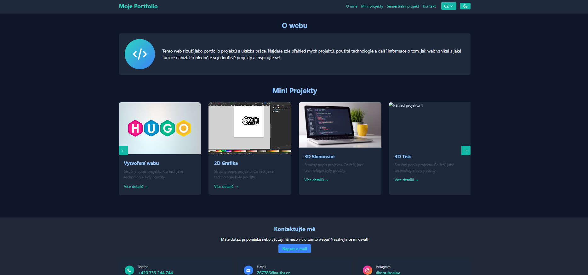

Popis projektu
V tomto mini projektu jsem se seznámil s tvorbou moderního webu. Naučil jsem se základy HTML a CSS, včetně práce s frameworkem Hugo. Výsledkem je responzivní web s podporou více jazyků a tmavého režimu.
Web je navržen s důrazem na jednoduchost, přehlednost a moderní design. Všechny stránky jsou plně responsivní a umožňují snadné přepínání jazyků.

Náhled webu
Průběh práce
-
I
Plánování a návrhStanovení cíle webu, návrh struktury a designu, výběr technologií.
-
II
Tvorba obsahuPsaní textů, příprava obrázků, tvorba struktury HTML.
-
III
Styling a funkceStyling pomocí Tailwind CSS, přidání jazykového přepínače a tmavého režimu v JavaScriptu.
-
IV
Testování a nasazeníOvěření funkčnosti, responsivity a nasazení webu na hosting.
Výsledky
Výsledkem projektu je plně funkční portfolio web s moderním designem. Web podporuje tři jazyky (čeština, angličtina, němčina), tmavý/světlý režim a je plně responzivní pro všechna zařízení.
- ● Responzivní design pro mobil, tablet i desktop
- ● Podpora 3 jazyků s přepínačem
- ● Tmavý režim s persistencí nastavení
- ● Optimalizovaná rychlost načítání
Co jsem se naučil
- ✔ Základy HTML, CSS a JavaScriptu
- ✔ Použití Tailwind CSS pro rychlý styling
- ✔ Implementace jazykového přepínače
- ✔ Základy práce s frameworkem Hugo
- ✔ Nastavení tmavého/světlého režimu